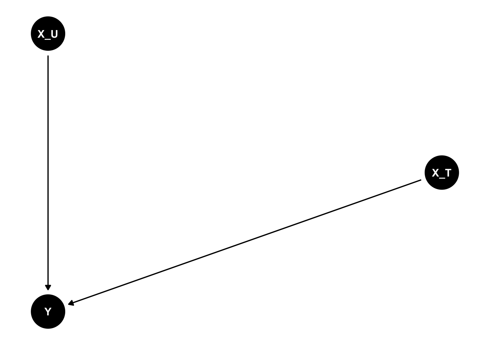

Hide the Code
library(ggdag)
dag_confound <- dagify(Y ~ Z,
`T` ~ Z)
ggdag(dag_confound,layout="circle") + theme_dag_blank()Read my latest on 5 lessons from political science to help rebuild Syria in The Conversation.
They both rely on the willing suspension of disbelief.
Robert Kubinec
May 5, 2025
Difference-in-differences (DiD) is a panel data model specification that is increasingly popular across the social sciences. Dungeons & Dragons (DnD) is a fantasy role-playing game that defined the genre and continues to inspire a horde of countless fans. What could DnD and DiD possibly have in common? (Besides the cute acronyms).
The dominance of both methods in their respective fields depends on participants who attach meaning to the worlds that they create. For DnD, players must adopt personalities and follow the orders of the dungeon master so that the story can unfold. In DiD, scholars must accept that the assumptions of the model represent objective reality, even though by definition assumptions can never be proven (if they could be, they wouldn’t be assumptions). For that reason, in order for people to enjoy DnD or rely on DiD, groups must accept their central premises as credible. Credible for different reasons—narrative fidelity versus explanatory or predictive fidelity—but group agreement about the willing suspension of disbelief is critical in either case to ensure widespread adoption.
I doubt many will like me using the term suspension of disbelief to discuss a statistical method. I don’t think that DiD is pure fiction like a Harry Potter novel. But there is remarkably widespread agreement that the assumptions of DiD are somehow weaker or more credible than other, even quite similar, types of models. It is this willingness to overlook a model’s assumptions that I find fascinating. How does a model move from the domain of mathematical definition to a social practice that offers far more than just coefficients? Perhaps I am being somewhat radical, but I think it is worth thinking through why some models end up becoming talismans of certainty.
The willing suspension of disbelief about DiD’s potential pitfalls is so strong that DiD is sometimes to referred to as a “natural” or “quasi” experiment—that is, a statistical model can, on its own, approximate a situation in which an experimenter went into the world and effected the cause him or herself—just like a DnD troupe believing it is liberating a real dungeon.
I am not the first to notice the skyrocketing usage of DiD.
The average American has 3 friends: DiD, RDD, and IV.
[image or embed]— Khoa ((khoavuumn.bsky.social?)) May 1, 2025 at 12:56 PM
The subject has become a regular meme topic in academic social media due to the ever-increasing number of potential estimators. How did this panel data specification become the true panel data specification? How did an extraordinary number of empirical findings in the social sciences come to rely on this model?
And, y’know, is… that a good thing?
Short answer: no. Living in a co-created fantasy world in which things that can’t be factually verified are treated as true is great for role-playing games. For statistical methods, not so much.
No, I don‚Äôt want to throw the baby out with the bathwater. There is plenty of brilliant DiD research. But if we keepusing only a hammer we may end up destroying a good number of screws. In this blog post I‚Äôll define DiD with causal graphs and then show how to simulate it with the R package DeclareDesign for robust power analyses of experimental and observational designs, so it‚Äôs not just a rant. Maybe with better tools we can build a better world üåç.
I’ll make the argument in this blog post that DiD isn’t any more likely to be causally identified than any other panel data method—without knowing something about the credibility of the application to the specific research question. If all we have is the math–regardless of how fancy it is–we don’t have a valid reason to prefer DiD over say a generic fixed effects panel data specification. The most that we can say is that we might want DiD over a purely cross-sectional comparison, but even in that case, we should still think about what it is we are trying to measure before we submit to PNAS.
Which brings me to the big take-away of this blog post: panel data methods are best understood as measurement strategies. A measure that works great in one empirical context will fail in another.
The exception of course is if we manipulate treatment assignment. For so-called “canonical” DiD, as I show later, this is indeed possible. In that case we can make fairly confident statements about causality without needing more information about the nature of the causal process (well, at least on paper). However, panel data methods are usually employed for observational research in part because their strength is external validity: examining a set of cases or units over a significant period of time. We lack the ability to perform experiments at that scale, but we very much want to know as much as we can about the way the world actually functions. Laboratories are only good for so much.
To make this argument, I’ll first review the specification for anyone who is not familiar. Feel free to skip this bit if you want to get to the “good” stuff.
DiD is usually presented in potential outcomes for the “2x2” scenario, i.e., two groups (treatment and control) that are observed at two time points: before and after treatment. However, I’ll start in a different place: DiD as a subset of panel data modeling. (For more background on panel data modeling, see my paper with Jon Kropko).
If we have a panel data set (multiple units \(i\) and multiple measures \(t\) for each unit), then we have in principle two basic models for a given time-varying outcome \(Y_{it}\). First, we can run an over-time model with fixed effects (intercepts) \(\gamma_i\) for each unit:
\[ Y_{it} = \alpha_1 + \gamma_i + \beta_{U} X_{it} + \epsilon_{it} \tag{1}\]
This model will return a coefficient of \(X_{it}\), \(\beta_U\), that is the average value of \(Y_{it}\) that is first averaged within each unit across the multiple measures \(t\) (i.e., a weighted average).
Alternatively, we can remove the unit/case intercepts and fit a model with intercepts \(\delta_t\) for each time point:
\[ Y_{it} = \alpha_2 + \delta_t + \beta_{T} X_{it} + \epsilon_{it} \tag{2}\]
This model will return a value for \(\beta_T\) that is equal to the average value of \(Y_{it}\) within each unique cross-section \(t\). In that sense, \(\beta_T\) is the average cross-sectional effect.
These two models capture the main dimensions of variation. Unit/case intercepts is equal to the multiple measures of \(Y_{it}\) and as such averages over time, while time intercepts average across units, or equivalently in the cross-section. We can think of these as distinct measures we can take from a given panel data set that has both a set of units/cases and multiple time-indexed measures for each unit.
Differences-in-differences as a panel data model is an interaction between the effect \(\beta\) and the time intercept \(\delta_t\), which I will call \(\tau\):
\[ Y_{it} = \alpha + \delta_t + \beta_{\tau'} X_{it} + \tau X_{it} \delta_t + \epsilon_{it} \tag{3}\]
As was previously mentioned, in the case in which \(t=2\), there will only be one possible value for \(\tau\) as the first time point \(t=1\) is dropped. From a linear modeling perspective, the DiD effect \(\tau\) is the “extra” variation in \(Y_{it}\) that comes from the cross-section “moving” or varying across from \(t=1\) to \(t=2\). This is especially true when \(X_{it}\) is a binary variable (i.e., a treatment indicator), which much of the literature assumes.
This is the “canonical DiD” formulation and equivalent to the following potential outcomes notation, in which we observe a unit \(Y\) in treatment ( \(Y^1\)) and in control ( \(Y^0\)), and the difference between these two values is the average treatment effect, or in the DiD case, the average effect on the treated, mainly because units in control can never receive the treatment. This estimand is defined as:
\[ ATT_{DiD} = [Y^1(1) - Y^1(0)] - [Y^0(1) - Y^0(0)] \tag{4}\]
The number in parentheses denotes the time point, so \(Y^1(1)\) is the treated unit after treatment occurs and \(Y^1(0)\) is the treated unit before treatment occurs (treatment is assigned, implicitly, between time points 1 and 2). While the control group \(Y^0\) can never receive the treatment, we still have two over-time observations for the control group, and the two time periods are differenced in the same way as the treatment group. The key idea is that we should want to look at the differences in pre/post measures because these differences are better than the “raw” over-time variation or cross-sectional variation as in the models mentioned above.
The DiD model is considered credible whenever the “parallel trends” assumption holds, that is, whether the units in treatment would have the same differenced value as the units in control—if the units in treatment were ever in control (which in observational settings they can’t be).
So far I haven’t said anything super controversial. But it is interesting that DiD is often presented in potential outcomes notation—but the other panel data methods are not. I sometimes think this is why people have such reverence for DiD as a probably causally-identified method: we can write it in potential outcomes and the parallel trends thing is pretty cool. But no reason we can’t do the same for unit FE or time FE models once we subtract away the unit means \(Y_i\) or the time means \(Y_t\) :
\[ ATT_U = E[ (Y^1 - \bar{Y^1_i}) - (Y^0 - \bar{Y^0_i})] \tag{5}\]
and
\[ ATT_T = E[ (Y^1 - \bar{Y^1_t}) - (Y^0 - \bar{Y^0_t)}] \tag{6}\]
Here the expectation operator \(E[\cdot]\) averages over all the observed units in treatment ( \(Y^1\)) and the observed units in control ( \(Y^0\)) after the observed means of \(Y\) for either units or cases are subtracted away. The formulas look similar to the DiD specification but there are important differences: rather than using discrete time points, we are subtracting away the mean value of \(Y_{it}\), which we denote with a bar. A mean is a single statistic and thus does not change when we increase either the number of units or the number of time points. As such, there is no specific modeling of time as in a DiD model. We could reorder the time points for the either specification and end up with the same average value as it doesn’t matter what order you take the average for a set of numbers.
Having worked through some of the notation, I want to come back to this post’s premise: why do people think that the DiD is the primus inter pares research design? Again, I’ve read several DiD papers (Chaisemartin and D’Haultfœuille 2025; Roth et al. 2023; Cunningham 2021; Huntington-Klein 2021; Zeldow and Hatfield 2021), and I can’t necessarily find a straight answer for this widely-held belief. If this is DnD, who’s the dungeon master?
In their forthcoming textbook, which should be the most comprehensive statement about available DiD methods to date, Chaisemartin and D’Haultfœuille (2025) state that
These are certainly all different identification conditions for simple cross-sectional and over-time comparisons, but it is not clear to me why Chaisemartin and D’Haultfœuille (2025) believe these assumptions are “weaker.” Why are “evolutions” better than “levels”?
Maybe this is obvious to some, but honestly, I don’t really get it. Just because something changed over time doesn’t make it causally identified. In fact, some things become more difficult to track over time. To give a simple example, when we compare two twins at birth, we can be fairly confident that any big differences in height or weight were due to gestational issues. A similar comparison of the twins at age 30 would have a much more difficult time pinning any differences between them to what happened in the womb.
I know I’m taking cheap shots at the papers cited above—this particular point is not something they were aiming to address—but I’m trying to illustrate what is a central problem in causal identification. What metric do we use to measure the strength of assumptions when the treatment is not manipulated? Technically, or not so technically, any causal inference analysis without treatment assignment is more or less screwed.
Unobservable counterfactuals are… unobservable. Actually, any “counterfactual” is by definition unobservable. You can’t approximate something that didn’t happen with any confidence unless you’re… playing DnD.
Similarly, in Roth et al. (2023) recent review (remarkably clear and thorough), they do not directly state why we should prefer DiD over other panel methods. They state that “difference-in-differences methods overcome this identification challenge via assumptions that allow us to impute the mean counterfactual untreated outcomes”, and then later that “the parallel trends assumption… intuitively states that the average outcome for the treated and untreated populations would have evolved in parallel if treatment had not occurred.” I agree that the parallel trends assumption is intuitive, but that does not strike me as particularly convincing in terms of the credibility of assumptions. Human intuitions are often flawed when it comes to interpreting statistical findings.
Also what exactly does it mean to “overcome an identification challenge via assumptions”? I can assume almost anything, including that I know the future. But I don’t know how that overcomes anything.
I am being somewhat harsh. All of the authors I’ve cited have done outstanding work in this field, and to be clear, I do think it’s useful. It just may not have an a priori reason to believe it’s causally-identified. Towards the end of this piece I will return to the utility of DiD. There is something there–but it is mainly a folk theorem, i.e., we are making educated guesses based on experience. There is something useful about DiD, but nothing magical. Other panel data methods may work better depending on the problem.
Sadly, DiD is not a +16 fireball attack or a legendary sword item as in DnD.
Or, as Monty Python puts it…
*it’s not a theorem, it’s just what I think is probably true
Models can be quite useful. But all models have a purpose, and no one model can explain every outcome very well. To show how different panel data models–including DiD–can both be and not be causally identified, I put them into the causal graph framework, and then show how to simulate these methods in a way that makes the bias/variance trade-off clear.
More generally, how should we represent a difference-in-differences model as a causal diagram? This seems pretty important given the prominence of the estimator in the causal inference literature. Oddly, while there are many expositions of DiD, virtually none of them have DAGs. The only one I could find was the following by Nick Huntington-Klein in his (excellent) book The Effect:
Nick argues that Time and Group are omitted variables that can create a back-door path between the treatment and the outcome. In other words, the treatment and the outcome may not have a causal relationship, but one could be present due to either Time or Group’s effect on both.
I think what Nick is going for here is that both Time and Group (i.e., the cross-section) create different inference challenges, but I find this graph a bit too illustrative for my purposes. Notably, Nick does not derive anything from this graph; his analysis uses the same PO notation as the others.
One big issue is that it is not clear how Time can be a variable. Yes, time changes, but does time cause anything? Rather, isn’t time a property of variables? As in, at time \(t\), the value of \(X\) was 3 while at \(t=4\), \(X=5\). Calling time a variable is like calling “inches” or “meters” a variable. Yes, it has numbers and it varies, but it’s actually a property of variables that we can use for measurement. Group could be a variable depending on whether we want to identify the causal effect of group membership—but it might also just be a way of taking measurements for a diverse set of groups that we are interested in for research purposes.
So is there a way to generally represent panel data methods like Equation 1 in a causal graph? That isn’t tied to any one linear model? I’ve thought about this way too much, and I think I might still be missing something, but what I have I will call:
Bob’s Really Great Causal DAG Theorem for Panel Data:
Theorem 1 Once a valid panel data transformation (i.e., measurement) is applied to all variables, the variables can be represented on a directed acyclic graph without reference to linear model coefficients.
By virtue of Theorem 1, once we represent variables this way, we can easily show that all standard threats of inference still apply to any given panel data transformation. What do I mean by standard threats of inference? Following Pearl and other DAG masters, these are:
Panel data transformations (i.e., algorithms like mean-centering) do not on their own solve any of these problems. That does not mean all panel data specifications are equally credible for all research designs–there may be good reasons why a certain specification (or measurement) has less concerns about #1, #2, or #3 in a given empirical context. But in terms of the causal structure, nothing about panel data modeling itself suggests that any of these threats have been resolved.
For example, take the following standard form of the omitted variable problem for a confounder \(Z\), treatment \(T\), and outcome \(Y\):
In this plot, \(T\) and \(Y\) have no causal relationship once you condition on \(Z\), the omitted variable. \(T\) and \(Y\) would be associated without conditioning on \(Z\). Now we examine what this would look for a panel data with intercepts for cases as in Equation 1:
We have now adjusted our variables so that they are mean-centered around the unit averages. As can be seen, it is still entirely possible that after completing the mean-centering operation that an omitted variable could still affect the outcome. All that is necessary is for the omitted variable to have some variation different from its within-unit expected value.
The same DAG could represent DiD once we input the specific changes required:
What the DAG makes clear is that so long as the confounder \(Z\) has variation across both time points, it could confound the \(Y\)/\(T\) relationship. This would constitute a parallel trends violation, and we could specify exactly what is happening with some of the available diagnoses. But to make it quite general, this DAG explains what is going on.
Furthermore, we could have DiD with collider/selection bias if \(Y\) and \(T\) are only related due to being causal ancestors of a selection effect \(S\):
So long as the selection (or attrition) process varies across time points 1 and 2, it won’t be differenced out and \(Y\) and \(T\) could end up with a misleading association.
This method of representing panel data methods as causal DAGS makes it clear why they cannot, on their own, induce identification. It is always possible omitted variables or collider/selection bias confound the relationship. While I have not shown it, post-treatment bias could also affect results. Because panel data specifications are essentially linear operations on variables, the best way to represent them in a DAG is as the result of these linear operations rather than attempting to coerce the linear operators into variables (like Time or Group). Measures should be distinct from variables.
This DAG also meets Pearl’s standard that it is independent of any particular statistical distribution or modeling function. We could use any distribution for the variables; we just have to difference them first. A linear panel data specification for DiD as shown above would of course meet this requirement conditional on the outcome being Normally-distributed etc etc.
So under what conditions should we pick one of these methods? As Jon Kropko and I have argued for some time, arguably the most important consideration is whether the variation in the data matches your research question (Kropko and Kubinec 2020). It doesn’t particularly matter if you have something causally identified if it’s irrelevant. I am quite sure that it was my fist that just punched through the first floor window; that causally-identified fact will help me very little when estimating the causal effect of education on crime. Very rarely do I see this issue addressed in either the theoretical or applied DiD/event study literature. Measurement is fundamental to causal inference because without it we cannot answer the question we set out to answer (Gerring 2012).
In some cases we may have one specific panel data measurement that is relevant. For many research questions, though, we can plausibly look at multiple sources of variation, such as cross-sectional comparisons, over-time within-unit comparisons, or something like DiD in one of its many flavors. For example, take the research question of the effect of rising wealth on democratization. We could compare countries to themselves—do countries have better democracy when their GDP is higher? Or countries to other countries—do wealthier countries have more democracy than poor countries? Or DiD–when wealth increases in some countries but not in others, do the countries that experienced the increase see greater democracy than those countries that did not? DiD is, as I will show, best understood as an interaction effect in the cross-section (did the cross-sectional relationship change between two time points).
What advantage does DiD have? Primarily it’s use of time. Time is the most useful property of the universe for estimating causal relationships other than direct manipulation—and is one of the most common ways that people identify causal relations in the “real world.” If I show up to work week and after week and get paid, and then stop coming to work and do not get paid, I have reason to believe that the relationship is causal. Time only moves in one direction, thankfully, so I know that I did not go to work because they first paid me as my attendance preceded my first paycheck. This is why we might prefer DiD over cross-sectional comparisons—but again, this is a folk theorem, not a mathematical proof.
When we add in a time dimension, a before and after, we can rule out all kinds of hypotheses like non-time-varying selection bias. At least in theory, that’s pretty neat! But to be clear, simply observing things over time doesn’t remove all threats to inference. As I showed previously with DAGs, DiD relationships can still have all the issues of selection bias, omitted variable bias, and the like, so long as these threats to inference also vary from one cross-section in time to the next.
For these reasons, there are two conditions under which we might want to use DiD over other panel data methods:
Most of the discussion in the literature focuses on #1. I almost never see #2, though note that recent research has shown that many social science studies, including event studies, are very plausibly under-powered (Arel-Bundock et al. 2025). For these reasons, even when we think DiD might do a better job isolating threats to inference, we should still look at the simpler one-way panel data methods. Why? Suppose that the relationship in a unit FE model is the same as DiD–the unit FE model will be far more precise. There is no reason not to look at the simpler models.
In addition, there is a condition under which we would want to use a simpler method:
I imagine it could also be true that DiD has omitted variable bias when the over-time/cross-section panel data methods don’t, but it’s kind of hard to visualize how that could work. For selection bias, though, it’s fairly straightforward. Suppose that there is a process that operates from one time point to the next, but not on the time series as a whole. What could this be? Think of seasonality. If I compare real estate sales in January to March, they will almost always rise. If that rise varies across treatment & control units, I might have a DiD-specific problem. By contrast, if I aggregate over time within units, I won’t have this issue because seasonality is constant across years. In that case, a one-way unit FE model that only looks at difference from the over-time average could be preferable.
I am sure that other examples exist. There is plenty of discussion of parallel trends and when it could be violated—though very little about whether other panel data methods might actually perform better in those situations. Which method is best will, at the end of the day, come down to the scholar’s judgment, which should take into account everything known about the hypothesized causal process and any knowledge of mechanisms.
In short, I think DiD is useful–it just can’t pull a rabbit out of a hat or a sword out of a stone. And we would probably make fewer inferential errors, and learn more from our data, if we stopped pretending like DiD is a “causal” method while other panel data measurements are not.
(Unless you manipulated the treatment, obvi).
To finish the blog post, I’ll go back to the simulation I created with Jon Kropko in our 2020 article and extend it to difference-in-differences. I’ll show how to use the remarkable DeclareDesign package to simulate and diagnose DiD designs when treatment can be assigned—and when it can’t.
It is not very easy to simulate realistic panel data due to the multilevel structure. It is always possible to directly generate coefficients from a linear model, but much harder to have those quantities represent something like real-world data. In Kropko and Kubinec (2020), we solved this problem for the case of two-way and one-way fixed effects models, that is, models where \(Y\) varies in the cross-section and within units over time. We did this by combining Equation 1 and Equation 2 and solving for \(Y\) and \(X\):
\[ \begin{align} Y_{it} &= \alpha_1 + \gamma_i + \beta_{U} X_{it} + \epsilon_{it}\\ Y_{it} &= \alpha_2 + \delta_t + \beta_{T} X_{it} + \epsilon_{it} \end{align} \tag{7}\]
and we show that:
\[ \begin{align} X_{it} &= \frac{\gamma_i - \delta_t}{\beta_T - \beta_U}\\ Y_{it} &= \frac{\beta_T \gamma_i - \beta_U \delta_t}{\beta_T - \beta_U} \end{align} \tag{8}\]
What this equation allows us to do is to simultaneously generate within-case and cross-sectional variation in \(Y\). By doing so, we can allow \(X\) to have varying effects on \(Y\) depending on whether we including time series intercepts \(\delta_t\) or case intercepts \(\gamma_i\). While it is easy to find contrasting 1-way FE effects in real-world panel datasets (Lipcean and Casal Bértoa 2024), it is virtually impossible to generate these types of effects with a single panel data equation (go ahead and try if you want).
What I did not notice at the time but is now more apparent is that our approach to simulating panel data borrows from simultaneous equation modeling. We essentially have the following DAG:

I wouldn’t call this a causal DAG per se—as I’ve argued, these are more appropriately considered measurements of \(X\). However, it is does visualize nicely what our approach amounts to and how it can be extended. We did not consider simulating differences-in-differences in the paper because that particular model had yet to become so popular, although my co-author Jon wrote up a brilliant supplemental analysis of DiD that pre-figured the later skepticism of TWFE as an estimator for DiD (see here).
To extend this simulation to DiD, we need to add in an interaction between the cross-section and a time indicator as a predictor of \(Y\):
This interaction between the cross-sectional variation in \(X_{it}\) in Equation 7 and the time indicator \(I[t=t']\), denoted \(\beta_{DiD}\) and for completeness, represents a DiD effect. I also added an interaction between the within-unit variation in \(X_{it}\) and the case indicator \(I[i=i']\), denoted \(\beta_{WiD}\). To my knowledge no one has ever tried to estimate this model, but it is in principle the converse of DiD.
With these additional interactions, we now have the following two equations:
\[ \begin{align} Y_{it} &= \alpha_1 + \gamma_i I[i=i'] + \beta_{U} X_{it} + \beta_{WiD}X_{it}I[i=i'] \epsilon_{it}\\ Y_{it} &= \alpha_2 + \delta_t I[t=t'] + \beta_{T} X_{it} + \beta_{DiD} X_{it}I[t=t'] \epsilon_{it} \end{align} \tag{9}\]
and solution for \(X\) and \(Y\):
\[ \begin{align} X_{it} &= \frac{\alpha_1 + \gamma_i I[i=i'] - \delta_t I[t=t'] - \alpha_2}{\beta_T + \beta_{DiD}I[t=t'] - \beta_U - \beta_{WiD}I[i=i']}\\ Y_{it} &= \frac{\beta_T \gamma_iI[i=i'] + \beta_{DiD}\gamma_iI[i=i'] + \beta_T \alpha_1 + \beta_{DiD}I[t=t'] \alpha_1 - \beta_U \delta_tI[t=t'] - \beta_{WiD} [i=i'] \alpha_2 }{\beta_T + \beta_{DiD}I[t=t'] - \beta_U - \beta_{WiD}I[i=i']} \end{align} \tag{10}\]
The addition of the indicator variables complicates the equations, but is necessary for completeness and also to show the interactions. While this formulation has a lot more parameters, it is functionally the same as the original but with interactions added in. There are other ways to simulate DiD, but starting with an interaction between the cross-sectional coefficient and the time point is very helpful because it clarifies what conventional DiD is and isn’t.
To illustrate, in the code chunk below I simulate panel data with the panelsim package. This package implements our paper simulation and is now expanded with the additional DiD extensions I have just described. You can get the package on Github here: https://github.com/saudiwin/panelsim (perhaps one day on CRAN, we’ll see).
To simulate a panel data set with a fixed DiD coefficient of 1 and exactly 2 time points with 100 cases/units (\(N\)) for a total of 2,000 rows of data, I use the tw_data function from panelsim in the code block below. The tw_data has options to generate all of the coefficients in Equation 10 as the function documentation shows. For now, I’ll just leave most of those other arguments at their defaults, which will generate a fair amount of heterogeneity in the over-time and cross-sectional variance of \(Y\).
tw_data produces a list with a data frame of simulated panel data along a list with the parameters used to generate it. With this data, I can then identify the DiD coefficient by fitting a linear model specification with an interaction between \(X\) and the time indicator. Big win for the OLS fans!
Call:
lm(formula = y ~ x * factor(time), data = gen_data$data)
Residuals:
Min 1Q Median 3Q Max
-2.75685 -0.61528 -0.01365 0.58801 2.36132
Coefficients:
Estimate Std. Error t value Pr(>|t|)
(Intercept) -0.30666 0.09894 -3.099 0.00222 **
x 0.61050 0.00456 133.875 < 2e-16 ***
factor(time)2 -1.00010 0.14223 -7.032 3.32e-11 ***
x:factor(time)2 0.94030 0.01155 81.407 < 2e-16 ***
---
Signif. codes: 0 '***' 0.001 '**' 0.01 '*' 0.05 '.' 0.1 ' ' 1
Residual standard error: 0.9894 on 196 degrees of freedom
Multiple R-squared: 0.9951, Adjusted R-squared: 0.995
F-statistic: 1.323e+04 on 3 and 196 DF, p-value: < 2.2e-16The DiD estimate in the lm model output is the x:factor(time)2 coefficient. This number is unlikely to be exactly 1 as this estimate is kind of noisy, as we have already discussed. Indeed, any interaction effect is likely to have power issues, as has become increasingly well-known. It really is amazing how much power is lost by only looking at an interaction between two time points. You need a lot of cases. And what if the coefficients for a “naive” model (1-way time FE or case FE) aren’t in fact any different than DiD? How “bad” does the naive model have to be before you throw away a lot of power and use DiD? The tw_data function can help you answer that question.
All of the other coefficients were generated by the tw_data function, but we can have more control. For example, we can also fix the constituent term for x (\(\beta_T\) in Equation 9) to a specific value:
Call:
lm(formula = y ~ x * factor(time), data = gen_data$data)
Residuals:
Min 1Q Median 3Q Max
-3.1796 -0.6738 -0.0302 0.6880 3.0093
Coefficients:
Estimate Std. Error t value Pr(>|t|)
(Intercept) -1.0361074 0.0311875 -33.22 <2e-16 ***
x -0.2986184 0.0005474 -545.52 <2e-16 ***
factor(time)2 -0.6355300 0.0441176 -14.40 <2e-16 ***
x:factor(time)2 0.9985621 0.0005533 1804.81 <2e-16 ***
---
Signif. codes: 0 '***' 0.001 '**' 0.01 '*' 0.05 '.' 0.1 ' ' 1
Residual standard error: 0.9862 on 1996 degrees of freedom
Multiple R-squared: 1, Adjusted R-squared: 1
F-statistic: 2.534e+07 on 3 and 1996 DF, p-value: < 2.2e-16The coefficient for x in the model output is now close to our simulated value. Intriguingly, the standard error on the interaction effect is now smaller, suggesting that our fixing of the constituent term is a way of “cheating” by increasing power through increased precision. In any case, fixing these parameters is not the default.
One of the main uses I designed tw_data for is to simulate DiD models and test for power and other issues. The advantage of using tw_data is that there are no restrictions on \(X\) or \(Y\): you can have continuous variables on both sides of the equation. However, to make the analysis comparable to the DiD specification in the literature, as well as to make use of existing resources for power analysis, we can also look at the case where \(X\) must be equal to 1 or 0, that is, \(X\) is a treatment that we can potentially manipulate.
The best existing power analysis package for R–and indeed, for essentially any statistical software in existence–is DeclareDesign. It even has an associated book you can read online: https://declaredesign.org/. The software can allow you simulate and diagnose virtually every possible issue in research designs. While it is designed with experiments in mind, the authors also allow for various kinds of observational analyses as well. In fact, they even have a chapter of their book devoted to DiD simulation: https://book.declaredesign.org/library/observational-causal.html#sec-ch16s3. My one quibble would be that they put it under the non-intuitive chapter heading “Observational: Causal”, meriting DiD with some special favor that I’ve argued isn’t necessarily justified. But anyway.
Their simulation uses DeclareDesign’s own tools for multilevel analysis, which are quite powerful. At the same time, it can be a bit hard to follow what they are doing if you aren’t intimately familiar with joins and DeclareDesign’s API. In the code below I integrate the tw_data function with DeclareDesign functions, which has the advantage of allowing the user to specify directly the DiD treatment effect and make use of tw_data’s ability to generate realistic values for unit and time heterogeneity (or lack thereof) without needing to do a lot of plumbing.
In order to make tw_data work with DeclareDesign, I added the option for tw_data to accept a treatment vector of 1s and 0s to the treat_effect argument—that is, to let \(X\) be set exogenously by random assignment by the DeclareDesign package. To do so, I simplified Equation 10 for the cases where \(X=1\) and \(X=0\). Without getting into the weeds, it was an interesting process as it exposed that not all coefficients of the linear model can be independently generated when \(X\) is fixed—there are essentially not enough free parameters. However, tw_data is still able to add a lot of heterogeneity in the estimation while controlling most of the relevant effects.
The code below simulates a two time point DiD model with a true DiD effect of -3.5 and an “inquiry” for the ATT (average treated effect on the treated) of the DiD that is defined in potential outcomes notation:
to_declare_design <- function(prior_panel_data=NULL,
treat_vec=NULL,
time=NULL,
...) {
this_sim <- tw_data(prior_true_vals = prior_panel_data,
treat_effect = treat_vec,
...)
this_sim$data$y
}
`T` <- 2
n_cases <- 100
did_coef=-3.5
main_coef=.3
within_main_coef=-0.9
panel_data_prior <- tw_data(N=n_cases,T=`T`,did.eff.mean = did_coef,did.eff.sd = 0, cross.eff.mean=main_coef,
cross.eff.sd = 0)
did_sim <- declare_model(N=n_cases * `T`,
case=panel_data_prior$data$case,
time=panel_data_prior$data$time,
potential_outcomes(Y ~ to_declare_design(panel_data_prior,X,
T=`T`,
N=n_cases),
conditions=list(X=c(0,1)))) +
# DEFINITION OF DID ESTIMAND:
declare_inquiry(ATT=mean(Y_X_1[time==2] - Y_X_1[time==1]) - mean(Y_X_0[time==2] - Y_X_0[time==1])) +
declare_inquiry(CATE1= mean(Y_X_1[time==1] - Y_X_0[time==1])) +
declare_inquiry(CATE2= mean(Y_X_0[time==1])) +
declare_inquiry(CATE3 = mean(Y_X_0[time==2]) - mean(Y_X_0[time==1])) +
declare_assignment(X = cluster_ra(clusters=case)) +
declare_measurement(Y = reveal_outcomes(Y ~ X)) +
declare_estimator(Y ~ X*factor(time),inquiry="ATT",
.method=lm,
term="X:factor(time)2",
label="ATT") +
declare_estimator(Y ~ X*factor(time),
.method=lm,inquiry="CATE1",
term="X",label = "Constituent") +
declare_estimator(Y ~ X*factor(time),
.method=lm,inquiry="CATE2",
term="(Intercept)",label = "Global Intercept") +
declare_estimator(Y ~ X*factor(time),
.method=lm,inquiry="CATE3",
term="factor(time)2",label = "Time Intercept")A crucial part of the code is:
ATT=mean(Y_X_1[time==2] - Y_X_1[time==1]) - mean(Y_X_0[time==2] - Y_X_0[time==1])The Y_X_1 notation signifies the value of \(Y\) when \(X=1\), that is, when \(X\) is in treatment. We subset these potential outcomes by vectors of time points generated by tw_data so that we can explicitly compare \(X\) in treatment in time 2 versus time 1. This is a non-parametric definition of the DiD coefficient that matches the definition in the literature.
Given this specification, we can use DeclareDesign’s powerful diagnose_design to see how well the lm function is able to capture the DiD effect from a fitted linear model compared to differencing the potential outcomes:
Research design diagnosis based on 500 simulations. Diagnosis completed in 8 secs. Diagnosand estimates with bootstrapped standard errors in parentheses (100 replicates).
Design Inquiry Estimator Term N Sims Mean Estimand
did_sim ATT ATT X:factor(time)2 500 -3.49
(0.01)
did_sim CATE1 Constituent X 500 0.30
(0.01)
did_sim CATE2 Global Intercept (Intercept) 500 -1.33
(0.00)
did_sim CATE3 Time Intercept factor(time)2 500 -0.46
(0.01)
Mean Estimate Bias SD Estimate RMSE Power Coverage
-3.48 0.01 0.28 0.20 1.00 1.00
(0.01) (0.01) (0.01) (0.01) (0.00) (0.00)
0.30 0.00 0.20 0.14 0.32 1.00
(0.01) (0.01) (0.01) (0.00) (0.02) (0.00)
-1.33 -0.00 0.14 0.10 1.00 1.00
(0.01) (0.00) (0.00) (0.00) (0.00) (0.00)
-0.47 -0.00 0.20 0.14 0.65 1.00
(0.01) (0.01) (0.01) (0.00) (0.02) (0.00)As can be seen, lm and the interaction effect of \(X\) and \(time\) hits the nail on the head–the estimate is almost exactly equal to the true DiD coefficient of -3.5 as well as DeclareDesign’s separate calculation using averages of potential outcomes. Furthermore, the other inquiries listed show other parts of the potential outcome notation that map on to other model coefficients simulated by tw_data:
[1] "True DiD/ATT Coefficient:"[1] -3.5[1] "True Constituent Coefficient:"[1] 0.3[1] "True Global Intercept:"[1] -1.330133[1] "True Time Intercept:"[1] -0.452759Pretty cool, right? This code can then be modified to add in whatever other issues might arise in actual research designs. At some point I will also add an explicit function to panelsim that wraps all the helper functions for DeclareDesign modeling & DiD power analysis—but it all works just fine with the code above.
It’s important to note that so far I have only simulated 2 time point DiDs. The reason for that should be clear with the interactions: if we interact \(X\) with a discrete time indicator, each additional time point will result in another \(\beta_{DiD}\) coefficient for each time point. Which two time points would we want to compare? We can certainly add more, as the code below does by comparing \(t=3\) to \(t=1\):
`T` <- 3
n_cases <- 100
did_coef=-3.5
main_coef=.3
within_main_coef=-0.9
panel_data_prior <- tw_data(N=n_cases,T=`T`,did.eff.mean = did_coef,did.eff.sd = 0, cross.eff.mean=main_coef,
cross.eff.sd = 0)
did_sim <- declare_model(N=n_cases * `T`,
case=panel_data_prior$data$case,
time=panel_data_prior$data$time,
potential_outcomes(Y ~ to_declare_design(panel_data_prior,X,
T=`T`,
N=n_cases),
conditions=list(X=c(0,1)))) +
declare_inquiry(ATT=mean(Y_X_1[time==3] - Y_X_1[time==1]) - mean(Y_X_0[time==3] - Y_X_0[time==1])) +
declare_assignment(X = cluster_ra(clusters=case)) +
declare_measurement(Y = reveal_outcomes(Y ~ X)) +
declare_estimator(Y ~ X*factor(time),inquiry="ATT",
.method=lm,
term="X:factor(time)2",
label="ATT")
did_sim
Research design declaration summary
Step 1 (model): declare_model(N = n_cases * T, case = panel_data_prior$data$case, time = panel_data_prior$data$time, potential_outcomes(Y ~ to_declare_design(panel_data_prior, X, T = T, N = n_cases), conditions = list(X = c(0, 1))))
Step 2 (inquiry): declare_inquiry(ATT = mean(Y_X_1[time == 3] - Y_X_1[time == 1]) - mean(Y_X_0[time == 3] - Y_X_0[time == 1]))
Step 3 (assignment): declare_assignment(X = cluster_ra(clusters = case)) -------
Step 4 (measurement): declare_measurement(Y = reveal_outcomes(Y ~ X)) ----------
Step 5 (estimator): declare_estimator(Y ~ X * factor(time), inquiry = "ATT", .method = lm, term = "X:factor(time)2", label = "ATT")
Run of the design: inquiry estimand term estimator estimate std.error statistic
ATT -3.57 X:factor(time)2 ATT -3.74 0.292 -12.8
p.value conf.low conf.high
4.42e-30 -4.31 -3.16One run of the design shows that we are pretty close to the “true” DiD coefficient, which is because we fixed the DiD coefficient in tw_data to be always equal to -3.5 regardless of how many time points we had. If we set did.eff.sd to a non-zero value, we would have heterogeneous coefficients across time points, which is likely more realistic.
The potential outcome notation further makes clear that for conventional data, you can only compare two time points at a time with a single difference. You can have as many time points as you want in the simulation, but it’s not obvious how you might aggregate across more than 2 time points and end up with a single estimand. This is what has led rise to the increasingly complex multiple time point DiD (de Chaisemartin and D’Haultfœuille 2023; Callaway and Sant’Anna 2020; Goodman-Bacon 2018), which sadly I do not have the space to address in this blog post (perhaps in the future or if I ever write another panel data paper).
However, this issue makes it clear why two-way fixed effects–that is, fitting a model with intercepts for case and time along with a single coefficient for \(X\)–can capture a DiD coefficient with more than 2 time points. Which year X treatment interaction is specified? And why do you use two-way fixed effects for DiD estimation anyway?
Well, it’s an odd trick of panel data modeling that fitting this model:
\[ Y_{it} = \alpha_i I[i=i'] + \alpha_t I[t=t'] + \beta_{TWFE}X_{it} + \epsilon_{it} \tag{11}\]
will produce a coefficient on \(X_{it}\) that is equal to the coefficient on \(X_{it}\) in the treatment X time interaction model we’ve been using:
\[ Y_{it} = \alpha_t I[t=t'] + \beta_{T}X_{it} + \beta_{DiD} X_{it} I[t=t'] \epsilon_{it} \tag{12}\]
So long as there are only two time points and we code the treatment vector slightly differently between both specifications.
Yes, that‚Äôs right, \(\beta_{TWFE} = \beta_{DiD}\). ü§Ø
How can that be possible? Well, there’s one small condition. When we “assign” units to treatment/control for Equation 11, we have to assign a treatment vector of all 0s for control units and a vector of \([0,1]\) for units in treatment, that is a 0 for \(t=1\) and a 1 for \(t=2\). When we use Equation 12, we instead use a treatment vector of all 1s for the treatment group for both time points, that is, \([1,1]\). With that simple change, the two coefficients are the same.
Don’t believe me? Below is some code where I change how DeclareDesign assigns the treatment vector and then uses TWFE to get the ATT:
# need a different treatment assignment function
twfe_assign <- function(case, time,prob=0.5) {
# first assign units to treatment or control
treated <- sample(x = unique(case), size = floor(length(case)*0.5), replace=T)
treat_vec <- as.numeric(case %in% treated)
# assign treatment vectors of [0,1] for units in treatment
treat_assign <- ifelse(treat_vec==1,
ifelse(time==1,
0, 1),
0)
}
# important distinction: set constituent term on X to 0
# otherwise you wil get some bias in the ATT
main_coef <- 0
panel_data_prior <- tw_data(N=n_cases,T=`T`,did.eff.mean = did_coef,did.eff.sd = 0, cross.eff.mean=main_coef,
cross.eff.sd = 0)
did_sim_twfe <- declare_model(N=n_cases * `T`,
case=panel_data_prior$data$case,
time=panel_data_prior$data$time,
potential_outcomes(Y ~ to_declare_design(panel_data_prior,X,
T=`T`,
N=n_cases),
conditions=list(X=c(0,1)))) +
declare_inquiry(ATT=mean(Y_X_1[time==2] - Y_X_1[time==1]) - mean(Y_X_0[time==2] - Y_X_0[time==1])) +
#declare_assignment(X = block_ra(blocks = time)) +
declare_assignment(X = twfe_assign(case=case,time=time)) +
declare_measurement(Y = reveal_outcomes(Y ~ X)) +
declare_estimator(Y ~ X + factor(time) + factor(case),inquiry="ATT",
.method=lm,
term="X",
label="ATT_TWFE")Now we can diagnose both designs (TWFE and 1-way time FE) to compare how they do:
Research design diagnosis based on 500 simulations. Diagnosis completed in 8 secs. Diagnosand estimates with bootstrapped standard errors in parentheses (100 replicates).
Design Inquiry Estimator Term N Sims Mean Estimand
did_sim ATT ATT X:factor(time)2 500 -3.49
(0.01)
did_sim CATE1 Constituent X 500 0.30
(0.01)
did_sim CATE2 Global Intercept (Intercept) 500 -1.33
(0.00)
did_sim CATE3 Time Intercept factor(time)2 500 -0.46
(0.01)
Mean Estimate Bias SD Estimate RMSE Power Coverage
-3.50 -0.00 0.31 0.21 1.00 0.99
(0.01) (0.01) (0.01) (0.01) (0.00) (0.00)
0.30 0.00 0.21 0.14 0.33 0.99
(0.01) (0.01) (0.01) (0.00) (0.02) (0.00)
-1.33 -0.00 0.15 0.10 1.00 0.99
(0.01) (0.00) (0.01) (0.00) (0.00) (0.00)
-0.45 0.00 0.22 0.14 0.58 0.99
(0.01) (0.01) (0.01) (0.00) (0.02) (0.00)
Research design diagnosis based on 500 simulations. Diagnosis completed in 7 secs. Diagnosand estimates with bootstrapped standard errors in parentheses (100 replicates).
Design Inquiry Estimator Term N Sims Mean Estimand Mean Estimate Bias
did_sim_twfe ATT ATT_TWFE X 500 -3.50 -3.51 -0.01
(0.01) (0.01) (0.01)
SD Estimate RMSE Power Coverage
0.29 0.28 1.00 0.96
(0.01) (0.01) (0.00) (0.01)Interestingly, the 1-way interaction model has lower RMSE and better coverage than the TWFE model, though both appear un-biased. Pretty cool, huh?
This should make it clear why TWFE had no business being a general purpose DiD model. It was only a neat math trick that let it estimate the DiD coefficient with 2 time points, and even then, it probably was never the optimal specification. With more than 2 time points, TWFE just doesn’t make sense, a point we made in Kropko and Kubinec (2020) that was quite controversial at the time but is now widely accepted.
There’s a lot more I’d like to do, but this blog post is long enough! Obviously this could be used to examine the newer and more complex DiD models and see how they combine different DiD effects across time points. Also, I hope this code is used for designing and testing DiD models, whether treatment assignment is manipulated or not. It is straightforward to derive a simulated power curve with tw_data alone if you have a continuous \(X\) and \(Y\).
I‚Äôd love to write a paper on this, but well, not a lot of time‚Äîbut if you want to, feel free! üòÉ. In the meantime, please consider citing my earlier paper with Jon if you use the package/this blog post: Kropko and Kubinec (2020).